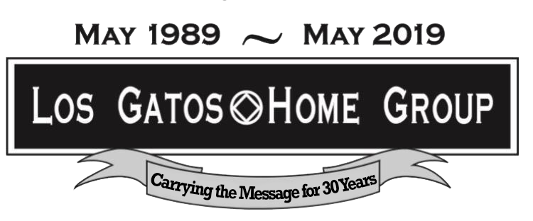

Welcome to Los Gatos Home Group
Founded in 1989 in Los Gatos California, Los Gatos Home Group has been carrying the message to addicts for over thirty years. In affiliation with NA In Place we were able to rapidly respond to the current world situation and bring our meetings online. See below for meeting schedule and instructions on joining.
October 2022 Home Group Group Conscience Meeting - October 2 at 3pm
Los Gatos Home Group will be having our next Group Conscience Meeting. Several admin and secretary positions are still available.
To connect to our Monthly Group Conscience Meeting, use this link: Group Conscience Meeting Zoom.
Meeting Schedule
Prior to the Shelter in Place we held 19 meetings a week. We now hold (almost) the same number of meetings online.
Monday* through Friday:
6AM, 12 Noon, and 6PM Pacific Time
Saturday and Sunday:
9AM and 6PM Pacific Time
*Note for the time being the Monday, Tuesday and Wednesday noon meetings have been suspended as we have been unable to find trusted servants to host and secretary these meetings.
The following four meetings are listed in the global Virtual NA Directory and typically have higher attendance with participants from around the globe:
Tuesday 6am Pacific TimeThursday 6am Pacific Time
Saturday 6pm Pacific Time
Sunday 9am Pacific Time
Any addict with the desire to stop using is welcome to attend any meeting, wherever you are in your recovery, and wherever you are on the planet.
How it Works
We use the Zoom video conference app which is supported on most tablets, smart phones, and computers. Or if you prefer, all meetings can be joined using a good old fashioned telephone.
Currently all nineteen meetings are accessed with the same Zoom meeting ID.
How to Join
Download the free Zoom app on your smart phone or tablet, enter the meeting ID 526022691 and click Join.
OR
Visit this URL in your browser: https://zoom.us/j/526022691 and follow the prompts
OR
Using your phone dial 1-669-900-6833 then enter meeting ID 526022691#